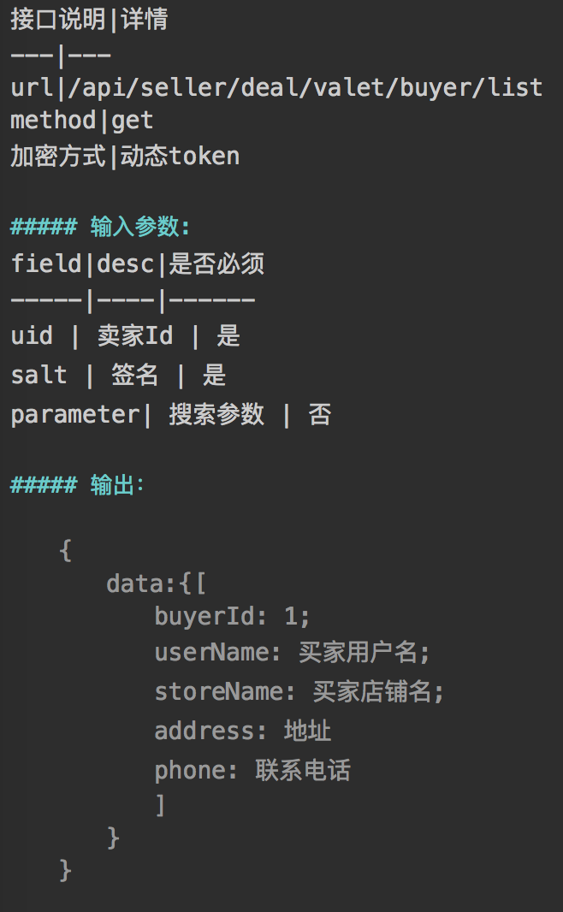
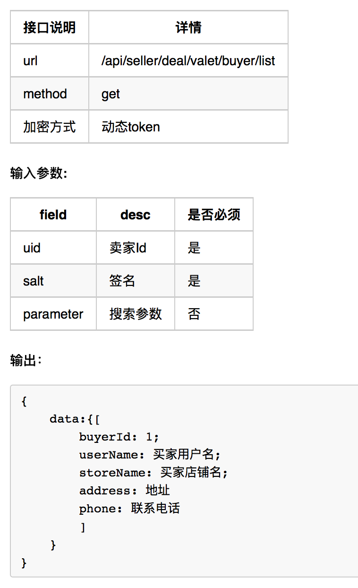
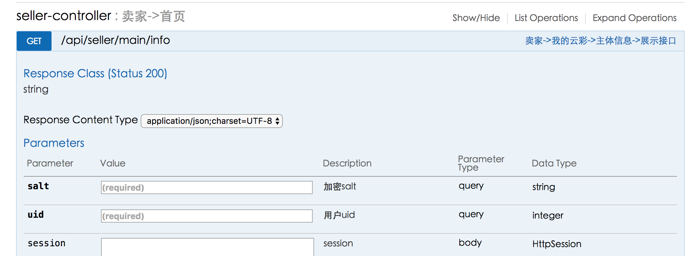

浅谈:
> 以下是我个人对swagger的理解, 以及一些看法, 或者说一些心得吧!
从我接触swagger历时到现在已经有3个月了, 我好像忘了当初是谁告诉我swagger的事了, 这都不重要, 重要的是, 在3个月期间, 都做了些什么.
一开始接触swagger的时候, 对它很陌生, 不知道它是做什么的. 看了介绍之后其实也是很懵逼的, 直到现在, 我也才是依稀明白它.
我所理解的swagger呢, 从作用上来说, 有两点:
>>1. 它起展示作用, 用于展示我们都有什么接口, 以及我们接口的请求方式, 返回值等等信息. (方便我们这些developer去看看自己都干了什么, 当然这不是主要的), 重要的还是, 方便前端同事能够清楚的了解到我们接口的内容.
那么, 它和接口文档的区别呢? 我认为, 我们可以把它当做一个很酷炫的接口文档吧, 通常我们在开发之前, 都会根据业务需求编写出对应的接口文档比如说这样:

当然这是markdown文件编写出来的. 真正成型的接口文档是长这样的~:

再来看看我们的swagger:

相信我们谁都不会排斥这样的接口文档, 总感觉很高大上呢~ 哈哈哈
我并没有说哪种方式更好, 不同场景不同的使用方式而已...
>>2. 我所理解的swagger的另一个作用就是, 接口测试. 接口测试可以快速帮助我们开发者测试接口是否能够正常返回数据. 另外也可以做一些比较特殊的参数, 看看是否有异常信息等. 我个人认为, 它还是很方便的(在我们的项目没有添加加密校验之前. 为什么这么说呢~ 因为swagger本身不会对参数进行加密, 虽然框架我搭建好了, 也能正常调用接口, 但是加密也是我接下来要处理的问题). 我也不会取评判swagger做接口测试和使用Postman做接口测试究竟谁更好, 因为各有各的有点. 比如Postman就有历史记录或者自己保存的接口信息, 很方便查询之前都用了什么参数, 用过什么接口, 并且Postman支持脚本等等, 也是一款非常好用的工具, 作为一名开发者, 我确实很喜欢它. 但我也同样会使用swagger, 没有非要确定用哪一款软件对吧? 哈哈~, 当然 IDEA的 RestClient 也是不错的选择~
Swagger principle (just my understanding)
通俗点说就是我自己的YY, 意思很浅显, 我也没太多时间去深究其中原理, 理解即可
一个完整Swagger Rest Api风格文档分成两个部分:
>1. 数据
数据部分呢, 来自于后台, 将每个Controller Or Action的信息, 以及每个添加了RequestMapping注解的方法都进行数据转换, 最终生成Json数据, 这么说也许太空洞了.
因为每个方法, 我们需要对外提供访问接口都需要配置RequestMapping, 所以, Swagger会抓取配置了这些注解的方法, 将其中信息生成Json数据.
>2. UI
UI是将后台返回的JSON数据进行解析, 渲染, 最终成为一条一条的接口, 就像上图一样. UI的一个重要功能是, ajax请求, 当我们请求UI地址的时候, 页面加载完成后会发送一条ajax请求到服务器请求这个json数据, 然后进行渲染展示.